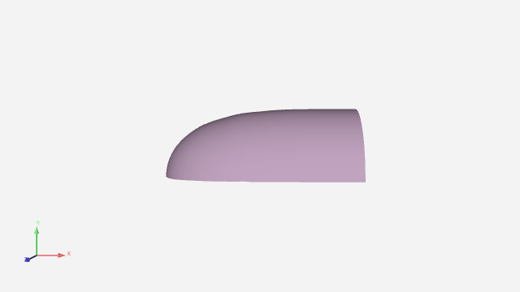
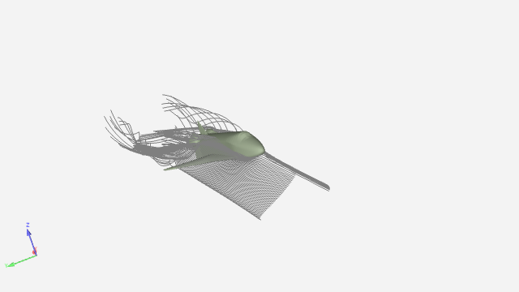
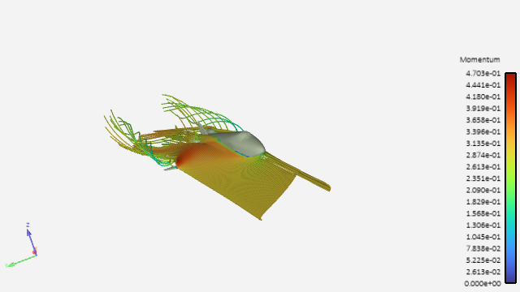
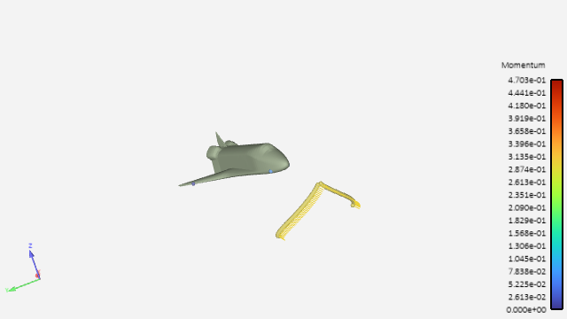

Note
Go to the end to download the full example code
Particle Trace (Streamline/Pathline) usage#
Utilize EnSight Particle Trace (aka Streamline/Pathline) to visualize a vector through the domain. Create Streamline, animate, allow for dynamic change.
Start an EnSight session#
Launch and connect to an instance of EnSight. This example uses a local EnSight installation.
from ansys.pyensight.core import LocalLauncher
session = LocalLauncher().start()
# Setup shortcuts for long winded calls.
eocore = session.ensight.objs.core
eonums = session.ensight.objs.enums
eoutil = session.ensight.utils
Load a dataset#
Load Shuttle data included in the EnSight installation and render
xyz_file = f"{session.cei_home}/ensight{session.cei_suffix}/data/plot3d/shuttle.xyz"
q_file = f"{session.cei_home}/ensight{session.cei_suffix}/data/plot3d/shuttle.q"
session.load_data(
data_file=xyz_file,
result_file=q_file,
file_format="PLOT3D",
representation="3D_feature_2D_full",
)
session.show("image", width=800, height=600)
- The PLOT3D reader only reads the volume by default. Now, extract a
particular IJK range for the surface of the shuttle
session.ensight.data_partbuild.begin()
session.ensight.case.select("Case 1")
session.ensight.data_partbuild.data_type("structured")
session.ensight.data_partbuild.group("OFF")
session.ensight.data_partbuild.select_begin(1)
session.ensight.data_partbuild.domain("all")
session.ensight.data_partbuild.noderange_i(1, 53)
session.ensight.data_partbuild.noderange_j(1, 63)
session.ensight.data_partbuild.noderange_k(1, 1)
session.ensight.data_partbuild.nodestep(1, 1, 1)
session.ensight.data_partbuild.nodedelta(0, 0, 0)
session.ensight.data_partbuild.description("Shuttle")
session.ensight.data_partbuild.create()
session.ensight.part.select_byname_begin("(CASE:Case 1)Shuttle")
session.ensight.case.select("Case 1")
session.ensight.data_partbuild.end()
Setup the View#
Set View, Turn on Symmetry, turn off visibility of flow domain.
session.ensight.view_transf.rotate(-109.084335, -1.64276719, 0)
session.ensight.view_transf.rotate(-2.38553524, 115.462845, 0)
session.ensight.view_transf.zoom(0.489253074)
session.ensight.view_transf.look_at(2.4110589, 0.567389309, 0.241451085)
session.ensight.view_transf.look_from(2.4110589, 0.567389309, 5.69335651)
session.ensight.part.select_all()
session.ensight.part.modify_begin()
session.ensight.part.symmetry_type("mirror")
session.ensight.part.symmetry_mirror_y("ON")
session.ensight.part.modify_end()
session.ensight.part.select_begin(1)
session.ensight.part.modify_begin()
session.ensight.part.visible("OFF")
session.ensight.part.modify_end()
Create a Particle Trace using the Line Tool Specification#
Using the 3D parts as the parent, with the line tool as the emission type “Momentum” as the vector, and 50 points alone the line as emitter locations.
pt1 = [0.1245, 0.064366, -0.03438]
pt2 = [1.0018, 0.399756, -0.03258]
parent_parts = eoutil.parts.select_parts_by_dimension(3)
npts = 50 # number of emitters
vector_var = eocore.VARIABLES["Momentum"][0] # Vector variable to use
strpart = eoutil.parts.create_particle_trace_from_line(
"Streamline",
vector_var,
point1=pt1,
point2=pt2,
num_points=npts,
source_parts=parent_parts,
direction="+/-",
)
session.show("image", width=800, height=600)
Change Visual Attributes#
Modify the attributes of the Streamline for visual clarity
strpart.REPRESENTATION = eonums.TRACE_TUBE
strpart.WIDTHSCALEFACTOR = 0.012
strpart.COLORBYPALETTE = "Momentum"
session.show("image", width=800, height=600)
Animate the Streamlines#
Turn OFF the streamlines (to see the animate under) Turn ON the animate streamlines. Change to Sphere representation, size, and adjust speed and length.
strpart.VISIBLE = False
strpart.ANIMATE = True
eocore.HEADTYPE = eonums.ATRACE_HEAD_SPHERE
eocore.HEADSCALE = 0.03
eocore.PARTICLETIME = 2.0
eocore.DELTATIME = 0.065
eocore.MULTIPLEPULSES = True
session.show("image", width=800, height=600)
Close the session
# sphinx_gallery_thumbnail_path = '_static/03_ptrace_2.png'
session.close()
Total running time of the script: ( 0 minutes 0.000 seconds)